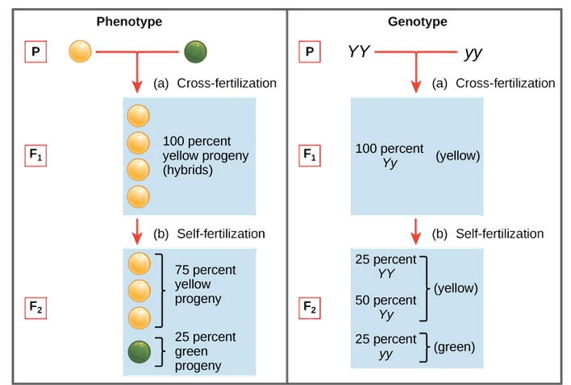

Definition of life
Chemists classify matter into two kinds: organic and inorganic. All living things are made up of organic compounds, combinations of molecules containing only a handful of elements---carbon, nitrogen, sulphur, hydrogen, and oxygen being the main players. By definition, an organic compound is simply one whose molecules contain carbon, an admittedly fairly arbitrary distinction. But it is curious that all living things contain carbon. There is nothing fundamentally different between the elements that comprise animate and inanimate things.
Not adequate:
Intrinsic properties:
-
Organization (composed of cell(s) that are highly organized)
-
Growth (increasing in size rather than by simply swallowing other matter)
-
Reproduction
Extrinsic properties
-
Transform energy by converting chemicals into cellular components
-
regulate their internal environments
-
adapt over time in response to their environments
-
respond to stimuli or changes in their surroundings
Water is the molecule that supports all life, and carbon is an element that every molecule of life contains.
Water
-
All of the living organisms that we're familiar with are mostly water.
-
About three-quarters of the Earth is covered by water.
-
We now know that life on Earth started in the water and, for the first 3 billion years of evolution, stayed there.
-
cells themselves are 70% to 95% water.
-
made up of two hydrogen atoms bonded to an oxygen atom.
-
Oxygen has more negatively charged electrons than hydrogen,
-
The life-giving properties of water stem from the fact that there are attractions between oppositely charged atoms of different water molecules. So, the hydrogen atoms of one water molecule are attracted to the oxygen atom in another. This attraction between molecules creates weak bonds that can form, break, and re-form very quickly and very often.
-
cohesion,
-
temperature moderation
-
solvency, and expansion.
-
Carbon
-
uniquely capable of forming large, complex, and diverse molecules.
-
Other elements such as hydrogen, oxygen, nitrogen, sulfur, and phosphorus are also common in organic compounds, but it's carbon that takes the starring role.
-
has four valence electrons in its outer shell--- electrons that it can share with other elements, making it possible for carbon to be the centerpiece in an almost infinite number of molecules.
-
Carbon is ubiquitous in living organisms because it's compatible with many other elements and because it can form complex chains with other carbon atoms.
Organic compounds
-
amino acids, which make up proteins
-
Almost every protein works by recognizing and binding to some other molecule, so if the shape is off, it can't function.
-
Many proteins are tasked with the job of speeding up chemical reactions---as catalysts. These proteins are called enzymes, and they can perform their duties over and over again, making them the true worker bees in the cell.
-
-
nucleic acids, the building blocks of DNA (deoxyribonucleic acid), our genetic code;
-
carbohydrates, such as sugars, starches
-
cellulose; and lipids, which are fats and hormones.
Genetics
-
A gene is a distinct chain of DNA---that's a chemical compound called deoxyribose nucleic acid---that contains the biochemical instructions for the production of a protein. Genes and a lot of so-called junk DNA (called introns) are coiled tightly into little bundles called chromosomes. Junk DNA doesn't provide any code for proteins, the usual function of DNA, but it likely has some other biological function related to genetics. We just don't know what that is yet.
-
Humans have two sets of 23 chromosomes, 46 in total, in the nuclei of our cells. One set of chromosomes comes from each of our parents, so every gene has two alleles: one from the mother and one from the father.
-
sYou can think of DNA as a simple language---a code, like Morse code---that can be read by a cell's machinery to produce new cellular components called proteins. If cells are the building blocks of our bodies, proteins are what keep them functioning. They are the agents that are responsible for all of the actions of our cells.
-
DNA utilizes four nucleobases (or bases, for short), which are four specific compounds that each contain nitrogen. These bases can be thought of like letters in the alphabet, such that different combinations of them form different genes, just as different combinations of the same 26 letters of the alphabet make up many different words. In fact, these four letters, or bases, make up the entire alphabet in the genetic code.
-
The four bases are adenine (A), guanine (G), cytosine (C), and thymine (T), each made up of different combinations of nitrogen, carbon, oxygen, and hydrogen. Their different combinations of elements give them different shapes.
Mendel's laws
-
Gregor Mendel studied inheritance of traits in pea plants. He proposed a model where pairs of \"heritable elements,\" or genes, specified traits.
-
Genes come in different versions, or alleles. A dominant allele hides a recessive allele and determines the organism\'s appearance.
-
When an organism makes gametes, each gamete receives just one gene copy, which is selected randomly. This is known as the law of segregation.
The law of segregation states that, for every characteristic, such as eye color or hair color, each parent possesses two possible versions of that characteristic and that during the reproductive process, these two traits, known as alleles, are separated (that is, segregated), with only one version passing on to the offspring.
There are dominant and recessive version of each of those traits. Going back to the pea plants, purple was the dominant flower color while white was the recessive color, because when one white plant and one purple plant were crossed, the offspring were always purple.
The set of alleles carried by an organism is known as its genotype. Genotype determines phenotype, an organism\'s observable features. When an organism has two copies of the same allele (say, YY or yy), it is said to be homozygous for that gene. If, instead, it has two different copies (like Yy), we can say it is heterozygous. Phenotype can also be affected by the environment in many real-life cases, though this did not have an impact on Mendel\'s work.

.
Electricity
-
Every atom with an electron has the potential to create an electric charge; electrons have an inherent negative charge. Most atoms found in nature are electrically neutral because the number of electrons equals the number of protons in the atom and the charges cancel each other out, leaving the atom with no net charge.
-
Electrons can be transferred from one atom to another. This flow of electrons is what we call electricity. The transfer of electrons can be initiated by:
-
When two different surfaces are rubbed together (static energy)
-
chemical reactions
-
electrical circuits
-
radioactive decay are just
Electrons get transferred, but no new electrons or other particles are created---so, whereas one substance becomes more negative, the other becomes more positive.
-
-
Because like charges repel each other and opposite charges attract, electric forces can alter the motion of an object. For example, if you move two like-charged objects toward each other, the force between them will cause one to repel the other---moving them away from each other.
-
An electric field is made by static electric charges. When these charges are in motion, the field is electromagnetic, as the motion induces a magnetic field as well.
-
A concept that incorporates the idea that more charges mean more energy is the electric potential. The electric potential energy of an object is a combination of its own electric charge and its relative position to other charged objects. The potential difference between two points is measured in volts and is called voltage.
-
An electric circuit is a closed-loop system in which electrons can flow to generate electricity. In every circuit, there is some power source, such as a battery or a generator, that produces the pressure or force necessary to move electrons.
-
The electric current is measured in amperes, the amount of electric charge passing a point per unit time (flow rate). To calculate the total power in the circuit, we multiply the current by the force and get the wattage.
-
The physical structure of a wire can increase or decrease the resistance to the flow. In an electrical circuit, we measure the resistance in units of ohms, which is the voltage divided by the current.
Thermodynamics
Thermodynamics, from the Greek words for "heat" and "movement," is the study of heat's relationship to work, and to energy in other forms.
Heat is energy that flows from a higher temperature to a lower temperature (to get something to go from cold to hot, then, requires work), often across objects in contact with one another. We measure heat in joules.